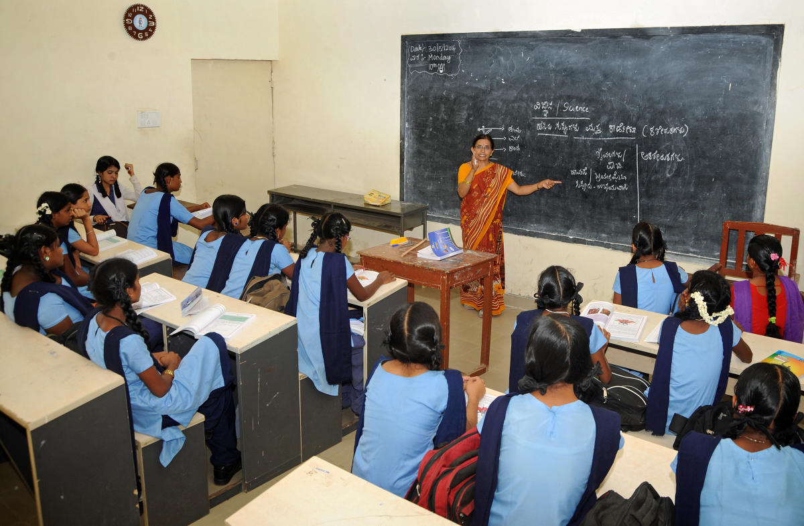

For all young people to have a good education by 2030, we must focus on greatly improving the learning opportunities of disadvantaged children.
Goal 4 Target

EVERY ACTION MOVES THE WORLD CLOSER TO A MORE SUSTAINABLE, JUST FUTURE FOR CHILDREN
Learning and action through service-learning give students a sense of purpose and internal motivation because what they do matters and makes a difference.
THERE ARE DIFFERENT TECHNIQUES FOR EDUCATING
Not everyone is at the same level of understand, so these are different techniques for learning.
- Cooperative learning
- Inquiry-based instruction
- Technology in the classroom
- Visualization
- Differentiation
- Behaviour management
- Professional development

THE BENEFITS OF GETTING AN EDUCATION